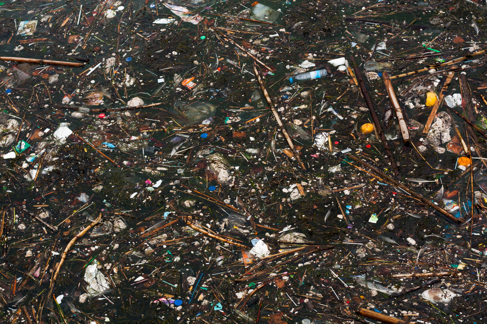
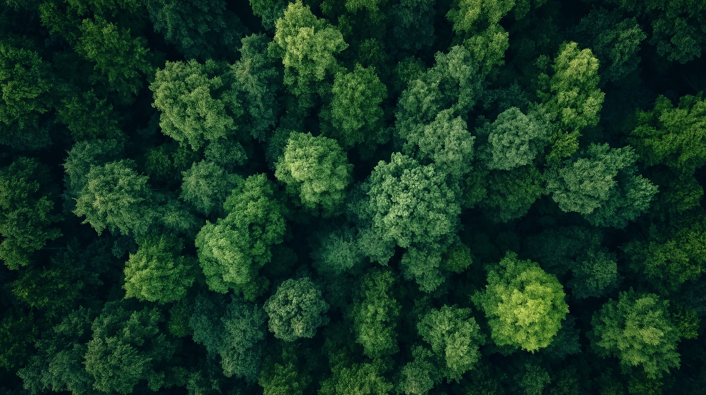
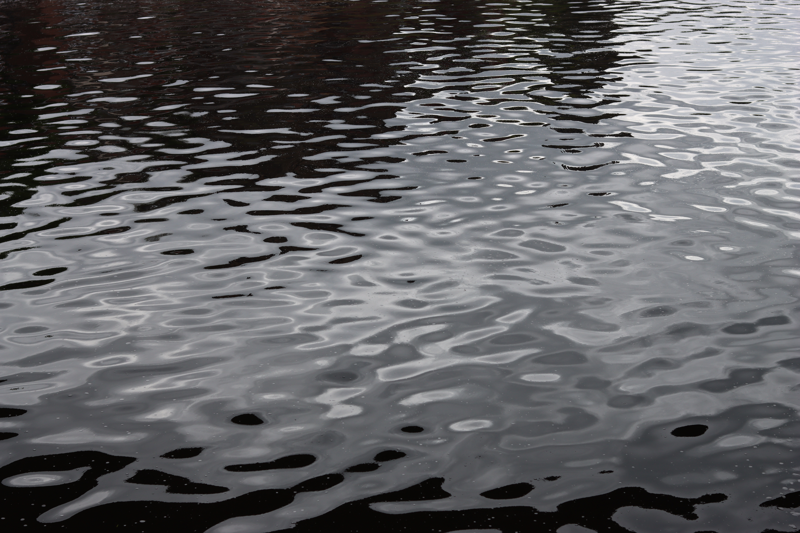
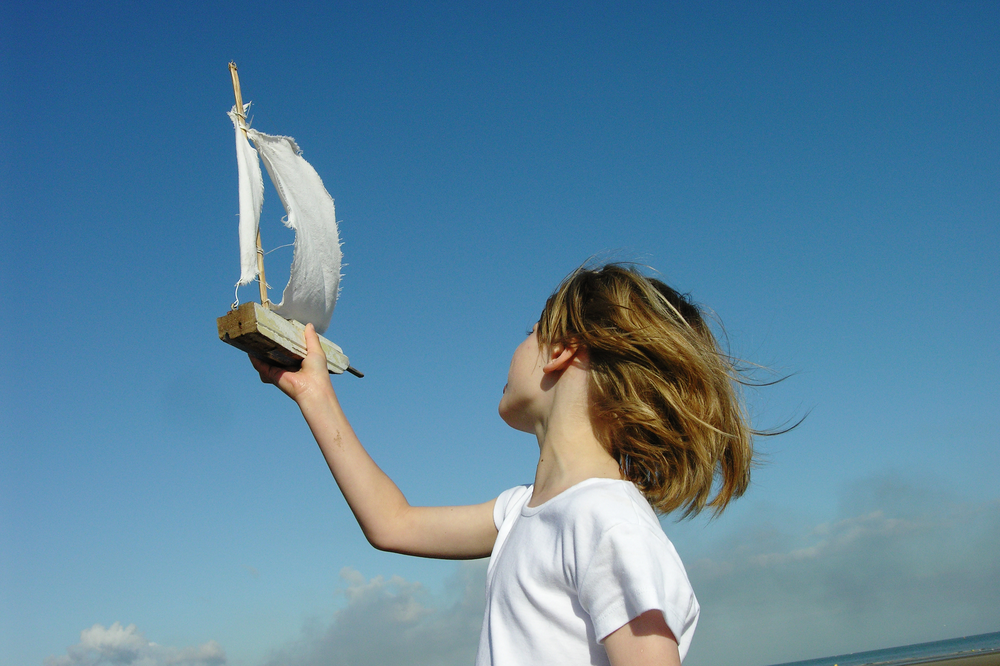

Collecte de déchets flottants
Mise à l'essai d'un dispositif de récupération adapté au site.
En savoir plus
Des actions concrètes pour une
Meuse plus saine

Mise à l'essai d'un dispositif de récupération adapté au site.
En savoir plus

Restauration d'une portion de berge ou de zone humide favorable à la faune aquatique.
En savoir plus
Suivi des déchets, de la qualité de l'eau et de l'évolution de la végétation.
En savoir plus

Informer, impliquer et valoriser les résultats auprès des citoyens.
En savoir plus